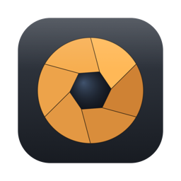

Tethr
一眼カメラを USB でつなぐ。撮ったカットがその場で届き、シャッターも露出も手元から。 Plug in your camera over USB. Every frame arrives as you shoot it, and the shutter and exposure answer to your hand.
Tethr for iPhone
カメラを iPhone に直結。撮ったカットを大きな画面で確認し、そのまま写真アプリへ。位置情報も記録できます。 Connect the camera straight to your iPhone. Review each frame on a screen worth looking at, import to Photos, and record where you stood.
iOS 17.0+
App Store 審査中In App Store review
Tethr for Mac
ライブビューを見ながら撮り、RAW を外付けドライブへ直接流し込む。GPS の一括書き込みまで。 Shoot against a live view, stream RAW straight to an external drive, and write GPS into a whole shoot at once.
macOS 26.0+ · 4.8 MB
ダウンロード 1.0Download 1.0つなぎかたHow it works
USB ケーブル1本。無線機能を持たないカメラでも動きます。 One USB cable. Cameras with no wireless of their own work just the same.
iPhone 版On iPhone
撮ったカットが自動で届くFrames arrive on their own
シャッターを切るとすぐに転送され、全画面で開きます。RAW で撮っていても、ファイル内の高解像度プレビューを直接読み出すので鮮明です。 Each frame transfers as you take it and opens full-screen. Shooting RAW is no obstacle — Tethr reads the full-resolution preview out of the file itself.
手元からのリモート撮影Remote control
シャッタースピード、絞り、ISO、露出補正、ホワイトバランス、撮影モード。カメラ本体の設定と常に同期します。 Shutter speed, aperture, ISO, exposure compensation, white balance and shooting mode — always in step with the camera body.
露出計Exposure meter
ファインダー内と同じインジケータを画面上部に。シャッターボタンはオートフォーカスを済ませてからレリーズします。 The indicator from your viewfinder, in the header. The shutter button focuses first, then fires.
撮影地点の記録Where you stood
iPhone の位置情報を使い、カットごとの撮影地点を控えます。GPS を持たない古いカメラでも、ジオタグ付きの写真が残ります。 Your iPhone's location is noted for each frame. Cameras with no GPS of their own still end up with geotagged photographs.
Mac 版On Mac
ライブビューLive view
カメラの映像を 25fps で受け取りながら撮影できます。オートフォーカスもアプリから。 A 25 fps feed from the camera while you shoot, with autofocus driven from the app.
保存先を選べるYour own destination
撮ったそばから、外付け SSD でも NAS でも、指定したフォルダへ直接流し込みます。 Frames land in the folder you choose — an external SSD, a NAS — the moment they are taken.
RAW への GPS 書き込みGPS into RAW
iPhone 版で記録した軌跡を同じネットワーク越しに受け取り、フォルダ内の RAW へ一括で書き込みます。原本は無傷です。 Take the track recorded on your iPhone over the local network and write it into a folder of RAW files at once, leaving the originals intact.
本体操作を邪魔しないOut of the way
カメラの制御を握りっぱなしにしません。いつもどおり手持ちで撮り、写真だけが Mac に届くモードで使えます。 Tethr gives camera control back when it is done. Shoot by hand as you always have, and let the photographs come to the Mac on their own.
インストールInstalling
ダウンロードした zip を開き、出てきた Tethr.app をアプリケーションフォルダへ移動してください。Apple の公証を受けているので、警告は出ません。
Open the downloaded zip and move Tethr.app into your Applications folder. The app is notarised by Apple, so no warning appears.
必要なものRequirements
| カメラCamera | PTP（Picture Transfer Protocol）に対応したデジタルカメラ。USB 設定は MTP/PTP にしてください。 A digital camera that speaks PTP (Picture Transfer Protocol). Set its USB mode to MTP/PTP. |
|---|---|
| 接続Connection | USB ケーブル。iPhone につなぐ場合は Lightning / USB-C のカメラアダプタが必要です。 A USB cable. Connecting to an iPhone also needs a Lightning or USB-C camera adapter. |
| 動作確認Tested with | Nikon D300Nikon D300 |
プライバシーPrivacy
データを収集しません。解析も広告もアカウントもありません。位置情報は端末内にとどまり、ご自身の Mac へ送る場合を除いて外へ出ることはありません。プライバシーポリシー。
Tethr collects nothing. No analytics, no advertising, no accounts. Your location stays on your device, except when you choose to send it to your own Mac. Read the privacy policy.